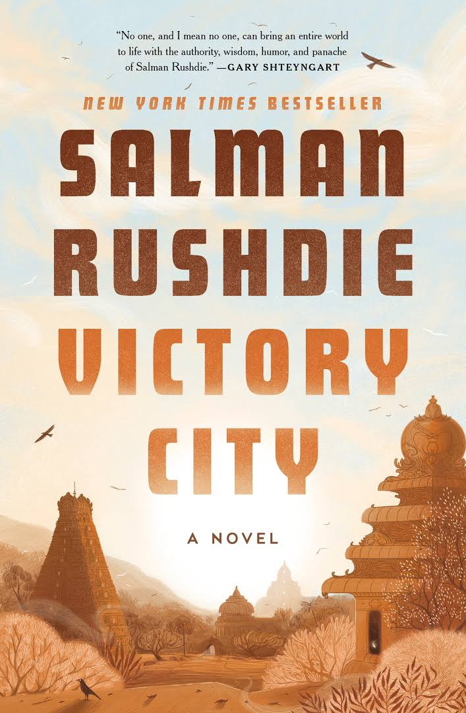

Top Read

Hello beautiful
Hello Beautiful is Anne Napolitano's warm, vibrant novel of family, mistakes, and forgiveness. Julia is the oldest of the four and is the Padavano family's linchpin. Self-confident, determined, and energetic she is the planner and fixer for all her sisters. She is closest to Sylvie who is the moon to Julia's sun.
Learn More

Victory City
It recounts the story of a sorceress and poet named Pampa Kampana, who dreams a whole civilization into existence from magic seeds. Through divine intervention, Pampa lives for more than two centuries, witnessing the city's many victories and defeats.
Learn More